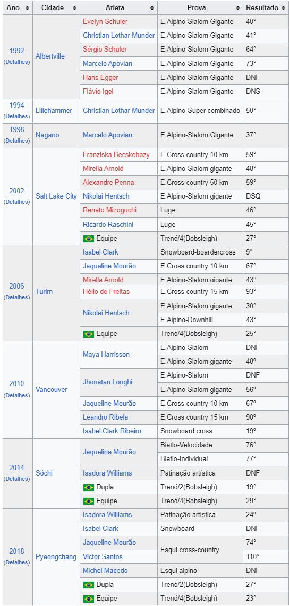

COMEÇO DO BRASIL NOS JOGOS OLÍMPICOS
A primeira vez do Brasil nos Jogos Olímpicos ocorreu nos Jogos Olímpicos de 1920, em Antuérpia, Bélgica. Participou de cada edição desde então, com exceção dos jogos de 1928, em Amsterdã, na Holanda. A crise econômica que o país atravessava impediu que houvesse recursos suficientes para enviar uma delegação.
Nos Jogos Olímpicos de Inverno, o Brasil estreou em 1992, em Albertville, na França. As participações do país em Jogos Olímpicos totalizam 30 em sua história. Com 150 medalhas em 18 esportes, é o país mais bem-sucedido da América do Sul nos Jogos. Suas melhores participações foram como país-sede dos Jogos Olímpicos de 2016, no Rio de Janeiro, com 19 medalhas, 7 de ouro, e na edição seguinte, Tóquio 2020, igualando o número de ouros e superando o total de medalhas com 21.
Voleibol (quadra e praia) e judô são os esportes que mais medalhas renderam ao Brasil, 24 no total - com o judô tendo garantido pódios em toda edição desde 1984 - e o vôlei sendo ao lado da vela o esporte mais vitorioso, 8 ouros. No vôlei, o Brasil foi o primeiro a ganhar o ouro em todas as quatro modalidades (quadra masculino em 1992, praia feminino em 1996, praia masculino em 2004 e quadra feminino em 2008), sendo igualado pelos Estados Unidos em 2020. O país também é o maior medalhista da história da competição de futebol com 9, sete do masculino, incluindo títulos em 2016 e 2020, e duas pratas no feminino.
Por fim, um atleta do Brasil conquistou a Medalha Pierre de Coubertin: Vanderlei Cordeiro de Lima, corredor de longa distância que foi atacado por um espectador durante a maratona masculina da edição de 2004 em Atenas, Grécia, quando liderava a prova, mas apesar do incidente ainda acabou com a medalha de bronze, mostrando bom espírito esportivo.
JOGOS DE VERÃO
A primeira participação brasileira em Olimpíadas foi nos Jogos Olímpicos de 1920, em Antuérpia, Bélgica. A delegação era constituída por 22 atletas, todos homens, que conquistaram 3 medalhas no tiro desportivo, uma de ouro, uma de prata e uma de bronze. Os atletas foram enviados pela Confederação Brasileira de Desportos (CBD).
O primeiro brasileiro a competir nos Jogos Olímpicos, porém, foi Adolphe Christiano Klingelhoeffer, em Paris 1900. Cidadão brasileiro nascido em Paris, filho de um francês com uma brasileira, ele competiu nos 60 metros rasos, 200 metros rasos e 110 metros com barreiras. Klingelhoeffer não é reconhecido pelo Comitê Olímpico Brasileiro porque em 1900 ainda não existiam comitês olímpicos nacionais.
Em 1924, por falta de verba da União e desistência da CBD, por pouco o Brasil não fica de fora dos Jogos Olímpicos de Paris. Situação que foi contornada graças a iniciativa dos esportistas de São Paulo, chefiados pelo jornalista Américo Neto, do Jornal O Estado de São Paulo e com apoio da Federação Paulista de Atletismo. Com delegação reduzida de somente 11 atletas homens, o Brasil participou das provas de Tiro, Atletismo e Remo.
Em 1932, nos Jogos Olímpicos de Los Angeles o Brasil envia 82 atletas de navio para os Jogos, chegando lá, os mesmos precisavam pagar um dólar para poder desembarcar, fato que acabou acarretando a não participação de 50 atletas. Somente os com maiores chances de exito puderam competir, entre esses a primeira mulher brasileira a participar dos Jogos Olímpicos, Maria Lenk. Nesses Jogos o Brasil participou nas modalidades Pólo Aquático, Remo e Atletismo.
Desde que iniciou seu Histórico olímpico, a delegação brasileira enviou milhares de atletas em suas mais de 2 mil vagas olímpicas até o momento. Em 2016, o Rio de Janeiro sedia os Jogos Olímpicos de Verão de 2016, sendo a primeira cidade da América do Sul a sediar o maior evento do esporte mundial. A maior delegação brasileira da história teve 465 atletas em 28 esportes. O país teve sua melhor participação, com 19 medalhas no total, 7 delas de ouro.
Os Jogos de 2020 em Tóquio tiveram o Brasil superando seus números do Rio 2016 com 21 medalhas no total, e igualando os 7 ouros. O país conseguiu também conseguiu sua maior variedade de esportes no pódio com 13, incluindo os estreantes surfe e skate e a primeira medalha no tênis.
JOGOS DE INVERNO
Em sua primeira participação em Albertville em 1992, o país levou 6 homens e 1 mulher, todos competindo no esqui alpino. Quatorze anos depois, em Turim 2006, Isabel Clark, praticante de snowboard, alcançou o melhor resultado histórico de participação brasileira (bem como latino-americana) nos Jogos de Inverno, ficando em nono lugar no snowboard em Turim 2006. A tabela abaixo sintetiza as participações do Brasil nos Jogos de Inverno:
